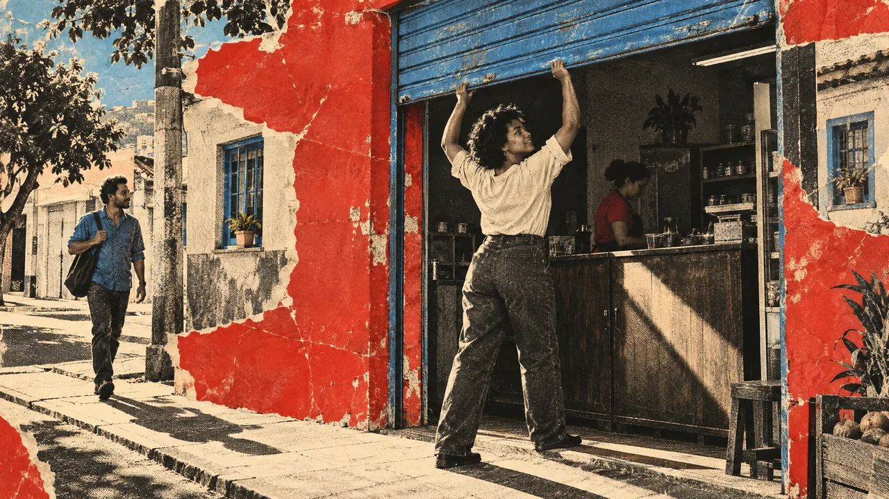
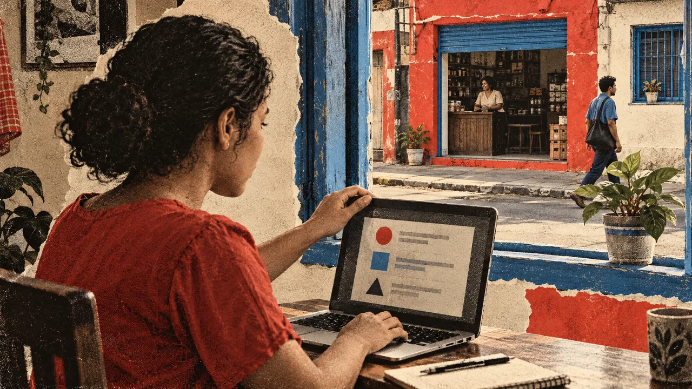

Cenas e vozes do Pense Mais Uma
Qual conversa soa mais natural?
Ouça as mesmas duas falas de Tarifa Zero com fones. A ordem muda a cada visita.
Revelar as vozes
A rua acorda
As três cenas de Trabalhar menos, na ordem da manhã.


